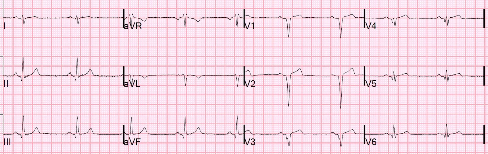
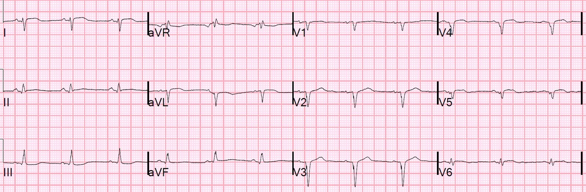
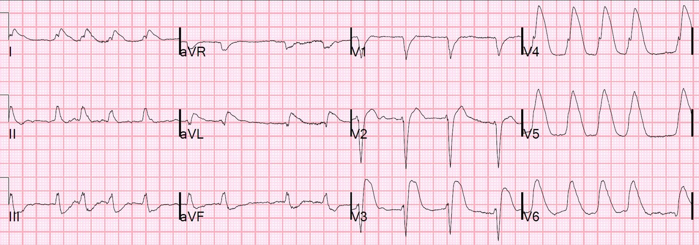
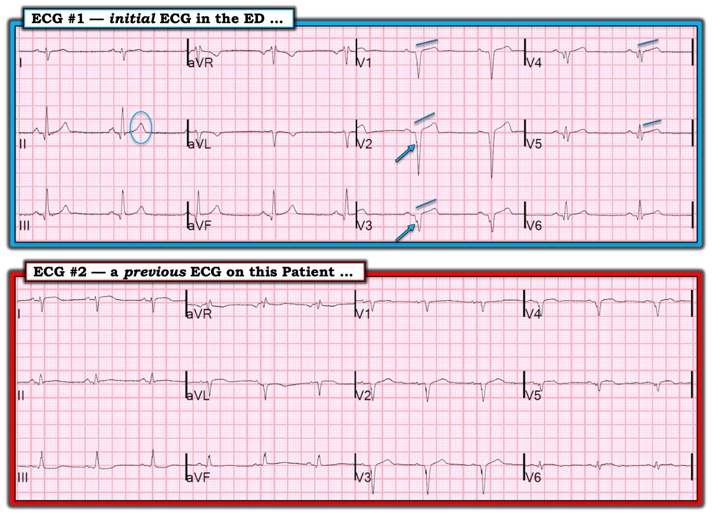

02/06/2019 — Đây có phải là tắc LAD mới với ST chênh lên chồng lên nhồi máu cơ tim cũ có sóng QS?
Bản dịch tiếng Việt của bài "Is this new LAD occlusion with ST Elevation superimposed on old QS-wave MI?" – Dr. Smith’s ECG Blog. Giữ nguyên toàn bộ 6 hình ảnh của bản gốc.
Một bệnh nhân nam trung niên có tiền sử STEMI thành trước biến chứng ngừng tim kéo dài, được tái lập tuần hoàn tự nhiên (ROSC) gần như kỳ diệu, đã đặt máy khử rung tim cấy được (ICD), than phiền khó thở khi gắng sức tăng dần trong 2 tháng, không đau ngực. Ông ấy có tập luyện thể lực, và khả năng tập luyện của ông đã bị hạn chế nặng nề.
Ông được biết có EF 35%.
Vào buổi sáng đến khoa cấp cứu (ED), ông than có cảm giác nghẹn ở cổ họng, và cảm giác này vẫn còn khi đến viện. Không có khó thở hay đau ngực lúc nghỉ.
Dấu hiệu sinh tồn bình thường. Khám bình thường. Không có bệnh lý ở họng.
Đây là điện tâm đồ của ông tại khoa cấp cứu:


Sóng QS kèm ST chênh lên mức độ vừa phải
Tuy nhiên, sóng T có thể hơi lớn so với phình thất trái điển hình.
Nếu có bất kỳ tỷ số T/QRS nào lớn hơn 0,36, hãy cân nhắc nghiêm túc rằng đây là nhồi máu cơ tim cấp, chứ không chỉ là nhồi máu cũ.
Trong ca này, các tỷ số T/QRS như sau:V2 = 3,5/16 = 0,22
V3 = 2,5/6,5 = 0,38
V4 = 2,0/4,5 = 0,44
Như vậy có 2 chuyển đạo có tỷ số cao hơn mức dự kiến đối với phình thất trái.
Dĩ nhiên, trong ca này chúng ta BIẾT ông ấy có nhồi máu thành trước cũ.
Và chúng ta có một điện tâm đồ cũ để so sánh:


Do đó, có vẻ như có ST chênh lên mới và sóng T to lên chồng lên phình thất trái cũ.
Tần số tim nhanh hơn sẽ làm ST chênh lên rõ hơn, nhưng trong ca này tần số tim lại chậm hơn.
Chúng ta không thể quy thay đổi này cho tần số tim.
Tại sao, nếu có tắc LAD mới, các dấu hiệu lại kín đáo đến vậy?
Thứ nhất, chúng ta đã thấy rằng tắc LAD có thể rất kín đáo.
Thứ hai, khi còn rất ít cơ tim còn sống, ST sẽ chênh lên ít hơn và sóng T to lên ít hơn.
Tôi rất lo ngại về cảm giác nghẹn ở cổ họng này và về điện tâm đồ.
Tôi gọi khoa tim mạch, và bác sĩ tim mạch trực biết rõ bệnh nhân này và cũng rất lo ngại.
Chúng tôi đã kích hoạt phòng thông tim (cath lab).
Các động mạch vành sạch.
Sau đó, bác sĩ tim mạch của ông nhớ ra rằng ông ấy đã tăng liều thuốc chẹn beta ngay trước khi tình trạng khó thở khi gắng sức mới xuất hiện. Đây có vẻ là một lời giải thích hợp lý cho việc hạn chế khả năng gắng sức.
Tuy nhiên, tôi không biết tại sao điện tâm đồ của ông lại cho thấy những dấu hiệu mới, đáng lo ngại này.
Nếu gặp một ca tương tự trong tương lai, tôi vẫn sẽ làm như vậy.
Không có điện tâm đồ nào được ghi sau đó để đánh giá sự thay đổi/tiến triển.
Nhân tiện, đây là điện tâm đồ của ông sau khi được khử rung 17 lần cách đây vài năm:



===================================
Bình luận của KEN GRAUER, MD (2/6/2019):
===================================
Một châm ngôn tôi được dạy trong đợt luân khoa ngoại thời sinh viên y là: “Nếu bạn chẩn đoán đúng viêm ruột thừa cấp hơn 80% số lần — thì bạn đang không đưa đủ bệnh nhân lên bàn mổ.” Châm ngôn này dĩ nhiên ra đời trước khi các kỹ thuật chẩn đoán tiên tiến được đưa vào thực hành (tức là siêu âm và MRI, vốn đã làm tăng đáng kể độ chính xác chẩn đoán) — nhưng tôi tin rằng nguyên tắc chung này ngày nay vẫn còn giá trị và áp dụng cho các bệnh lý ở nhiều chuyên khoa y học.
- Dù một người có thể trở nên tinh thông đến đâu trong việc đọc điện tâm đồ lâm sàng — không ai có thể tiên đoán chính xác 100% điện tâm đồ nào sẽ tương ứng với tắc mạch vành cấp khi thông tim.
- Mặc dù những người đọc giàu kinh nghiệm có thể đạt gần tới chuẩn chính xác lý tưởng này — không người đọc nào là hoàn hảo, và một điện tâm đồ ban đầu duy nhất thì không phải là không thể sai. Vì vậy, dù bản ghi gợi ý rõ ràng các thay đổi điện tâm đồ cấp tính — việc thông tim kịp thời và phù hợp đôi khi vẫn cho thấy các động mạch vành thông suốt.
BÀI HỌC: Bài viết này minh họa một ca trong đó kích hoạt phòng thông tim cấp cứu là hướng xử trí đúng mặc dù kết quả thông tim là âm tính.
- Nếu cùng tình huống này lặp lại — kích hoạt phòng thông tim cấp cứu một lần nữa sẽ là hướng xử trí đúng, bởi vì bệnh nhân này, với tiền sử STEMI thành trước và triệu chứng mới — đã đến khoa cấp cứu với các thay đổi điện tâm đồ mới gợi ý thiếu máu cục bộ cấp .
Dr. Smith đã trình bày chi tiết cách đánh giá định lượng tỷ số biên độ sóng T/QRS để chứng minh các dấu hiệu bất thường trên điện tâm đồ ban đầu. Dưới đây tôi tập trung bình luận về đánh giá định tính đối với bản ghi tại khoa cấp cứu ban đầu ( = Điện tâm đồ #1 trong Hình 1) — rồi đi sâu vào những thay đổi thấy được khi so sánh điện tâm đồ #1 với một điện tâm đồ cũ của bệnh nhân này ( = Điện tâm đồ #2).


==================
Suy Nghĩ của tôi về Điện tâm đồ #1: Trước hết và quan trọng nhất là Bệnh sử! Bệnh nhân này có tiền sử STEMI thành trước diện rộng, đến khám với bệnh sử 2 tháng khó thở tăng dần, xuất hiện “cảm giác nghẹn mới” vào ngày đến khám, và các triệu chứng vẫn còn lúc đến khoa cấp cứu. Trước khi xem điện tâm đồ ban đầu — chúng ta cần nhận thức rằng bệnh sử đáng lo ngại này mô tả một tình huống có tỷ lệ hiện mắc cao đối với thiếu máu cục bộ cấp.
- Phân tích mô tả điện tâm đồ #1: Nhịp chậm xoang tần số ~55 lần/phút. Tất cả các khoảng đều bình thường. Có trục lệch phải rõ rệt, với phức bộ qrS chủ yếu âm ở chuyển đạo I. Không có lớn các buồng tim.
Thay đổi Q-R-S-T:
- Sóng Q — Có nhiều sóng Q trên bản ghi này, phù hợp với nhồi máu cũ của bệnh nhân. Có sóng q nhỏ ở các chuyển đạo I, II, III, aVF (dù các sóng q thành dưới không hẹp lắm); có phức bộ QS lớn ở các chuyển đạo V1 đến V3 (với phân mảnh ở sườn xuống của sóng S ở V2 và V3 = [mũi tên XANH]) — và tiếp theo là các sóng Q tương đối lớn (nhất là khi xét đến biên độ QRS tương đối ở các chuyển đạo này) ở V4, V5 và V6.
- Tăng tiến sóng R — Vùng chuyển tiếp bị chậm đến giữa chuyển đạo V4 và V5 hoặc V6. Lý do của vùng chuyển tiếp chậm này là các phức bộ QS lớn ở thành trước.
- Thay đổi sóng ST-T — Sóng T nhọn ở từng chuyển đạo thành dưới (như được làm nổi bật ở chuyển đạo II, trong hình bầu dục XANH) — kèm sóng T đảo ngược hình soi gương nhưng nông ở chuyển đạo aVL. Đoạn khởi đầu ST trông thẳng đuỗn ở các chuyển đạo V1 đến V4 hoặc V5 (song song với các đường XANH nghiêng), với ST chênh lên nhẹ ở các chuyển đạo này.
Nhận định Ban đầu Của tôi về Điện tâm đồ #1: Tôi hoàn toàn không chắc chắn liệu các thay đổi mô tả ở trên trên điện tâm đồ #1 có phải là cấp tính hay không. Tôi có lo ngại vì bệnh sử. Tôi nghĩ đây có thể là một OMI cấp giai đoạn sớm đang trong quá trình tiến triển.
- Đây là một ca mà tôi thực sự muốn xem một điện tâm đồ cũ của bệnh nhân! Dù vậy, tôi đã đưa ra nhận định ban đầu trước khi xem điện tâm đồ #2.
- Có bằng chứng rõ ràng về (các) nhồi máu cũ diện rộng. Ít nhất là có nhồi máu cơ tim trước-bên cũ — thể hiện qua các phức bộ QS sâu ở các chuyển đạo trước kèm phân mảnh ở V2, V3 (mũi tên XANH) + sóng Q tồn tại liên tục tới tận V6 với biên độ sóng r rất nhỏ ở các chuyển đạo bên cao I và aVL (và một sóng q nhỏ ở chuyển đạo I ).
- Tôi không chắc LIỆU các sóng Q thành dưới nhỏ-nhưng-hơi-rộng có phản ánh nhồi máu thành dưới cũ — hay — liệu các sóng T nhọn-hơn-mong-đợi thấy ở từng chuyển đạo trong 3 chuyển đạo thành dưới, đi kèm sóng T đảo ngược nông-nhưng-có-hình-soi-gương khá rõ ở chuyển đạo aVL, có thể phản ánh tổn thương cấp hoặc mới xảy ra .
- Trong bối cảnh lâm sàng (tức là triệu chứng mới đáng lo ngại ở bệnh nhân đã biết có bệnh mạch vành nặng) — tôi lo ngại về tình trạng thẳng đuỗn tương đối của đoạn khởi đầu ST ở các chuyển đạo V1 đến V4 (có thể cả V5) + sóng T ở các chuyển đạo V3 và V4 trông như có thể là tối cấp khi xét đến việc thiếu biên độ sóng R ở các chuyển đạo này.
- Vượt ra ngoài phần cốt lõi: Tôi không chắc liệu trục lệch phải rõ rệt với QRS chủ yếu âm ở chuyển đạo I + dạng qR ở từng chuyển đạo thành dưới là dấu hiệu của: i) LPHB; ii) (Các) nhồi máu cũ; hoặc, iii) Cả hai tình trạng này. Phần lớn trường hợp — LPHB không biểu hiện như một khiếm khuyết đơn độc của hệ dẫn truyền, mà thường đi kèm với RBBB. Cũng không thường gặp một sóng q nhỏ ban đầu ở chuyển đạo I khi có LPHB — dù với tiền sử của bệnh nhân này thì chắc chắn có khả năng hình thái QRS ở các chuyển đạo chi là hậu quả của (các) nhồi máu cũ (với sóng q và mất biên độ sóng R ở chuyển đạo bên cao), dù có hay không có khiếm khuyết hệ dẫn truyền là LPHB.
- ĐIỀU CỐT LÕI: Tôi hoàn toàn không chắc chắn liệu các thay đổi mô tả ở trên trên điện tâm đồ #1 có phải là cấp tính hay không. Tôi cho rằng chúng ta cần: i) Thêm thông tin lâm sàng; ii) Tiếp cận một hoặc nhiều điện tâm đồ cũ , để có thể xác định dấu hiệu nào ở trên có thể là cấp tính; và, iii) Cân nhắc báo cho bác sĩ tim mạch trực biết rằng bệnh nhân này đang ở khoa cấp cứu và có thể sắp cần thông tim.
Nhận định Của tôi Sau khi Xem Điện tâm đồ #2: So sánh từng chuyển đạo giữa điện tâm đồ #1 và một điện tâm đồ trước đây của bệnh nhân này gợi ý những điều sau.
- Rằng, dù trục mặt phẳng trán không thay đổi đáng kể — sóng T nhọn ở từng chuyển đạo thành dưới của điện tâm đồ #1 là một dấu hiệu mới (không có trên điện tâm đồ #2).
- Ngay cả khi tính đến chút thay đổi về tăng tiến sóng R giữa 2 bản ghi trong Hình 1 (tức là không có sóng r đáng kể cho đến chuyển đạo V6 ở điện tâm đồ #2) — tình trạng thẳng đuỗn của đoạn ST thấy ở điện tâm đồ #1 tại 5 trong 6 chuyển đạo ngực (song song với các đường XANH nghiêng) — chỉ có ở các chuyển đạo V2 và V3 trên bản ghi trước đó (điện tâm đồ #2) — và không sóng ST-T nào ở điện tâm đồ #2 trông tối cấp.
- ĐIỀU CỐT LÕI: Trong bối cảnh lâm sàng có triệu chứng mới đáng lo ngại — các dấu hiệu mới thấy ở điện tâm đồ #1 so với điện tâm đồ trước đây của bệnh nhân này đủ cơ sở để kích hoạt phòng thông tim cấp cứu.
- Suy nghĩ cuối cùng #1: Việc có được một bản ghi cũ của bệnh nhân là vô giá trong ca này. Dù vậy, lý tưởng là chúng ta muốn biết bản ghi cũ này được ghi khi nào so với diễn tiến của đợt nhồi máu diện rộng và ngừng tim trước đây của bệnh nhân — và, liệu các dấu hiệu điện tâm đồ có tiến triển gì sau khi ra viện hay không.
- Suy nghĩ cuối cùng #2: Một tình trạng mới chồng lên có thể không tạo ra những thay đổi rõ rệt như người ta có thể nghĩ — NẾU điện tâm đồ nền của bệnh nhân đã có sẵn các thay đổi sóng ST-T theo hướng ngược lại …
Chúng tôi xin CẢM ƠN Dr. Smith đã trình bày ca bệnh rất sâu sắc này!